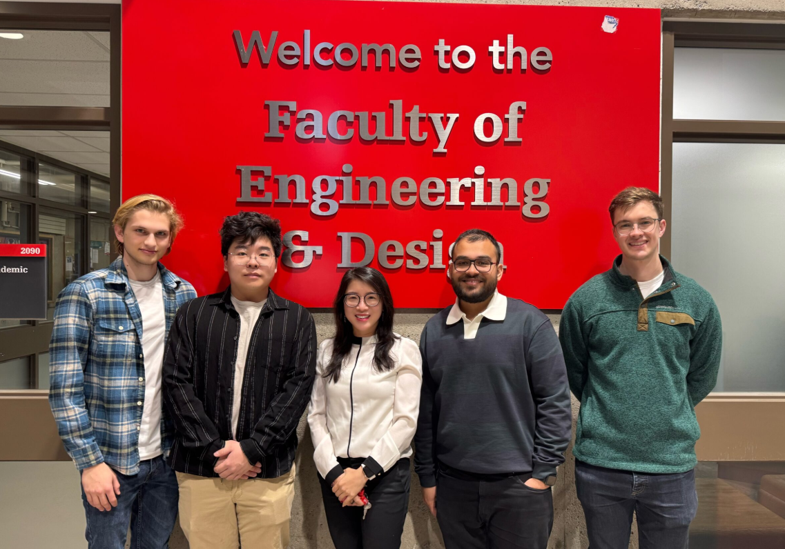
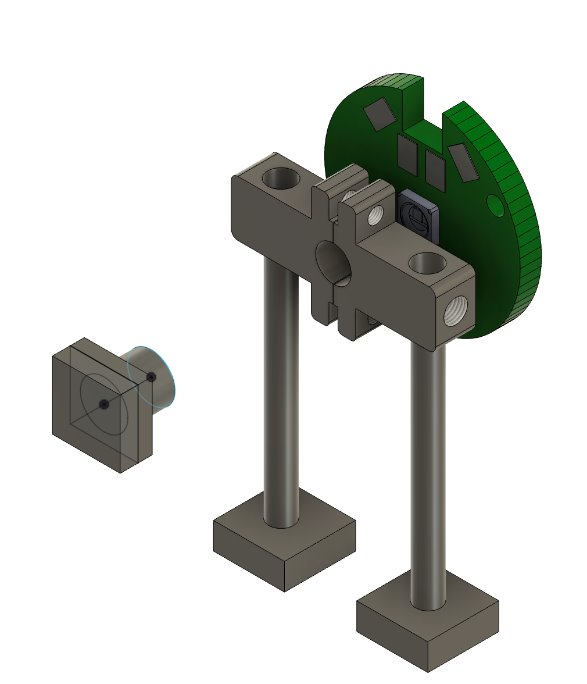
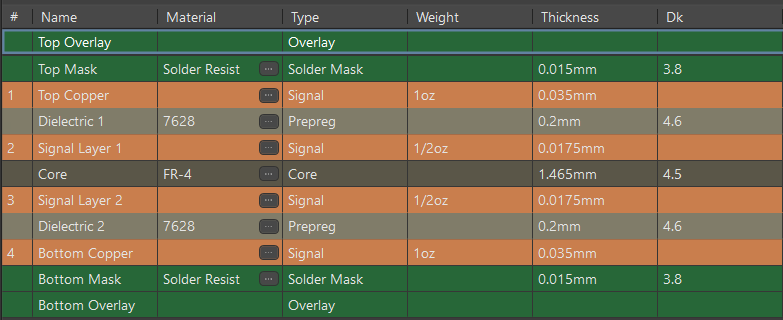
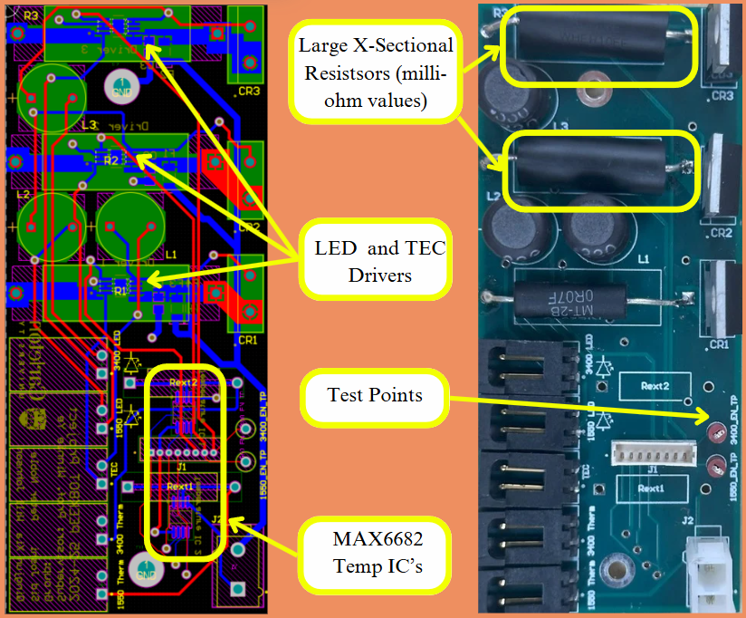
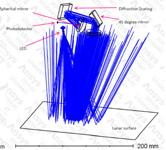
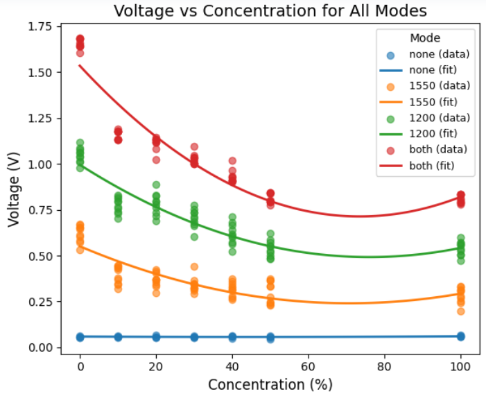
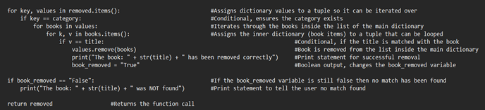

Integrate the detector into the Canadian Space Agency’s PEEKBot Lunar Rover.
Use reflective spectrometry to identify water’s characteristic wavelengths.
Contributions
Optical path simulation using Ansys Zemax.
Thermal and LED driver PCB design using Altium.
Lens efficiency testing via optical power measurements.
MicroPython software for thermal management system.
SPI/I2C integration with analog and digital sensors.
Results
Water successfully detected in 1D and 3D configurations.
Machine learning used to enhance data interpretation.
Temperature-aware prediction model developed.
Low-cost solution for lunar rover science payload.
Capstone finalist in Department of Electronics awards.

The PEEKBot Lunar Water Detector team.Reflective Spectrometry Design Concept.

3D printed collimating lens holder used for testing.

PCB design layers.

Thermal and Driver PCB.

Optical Path Simulation using Ansys Zemax.Final prototype, fully enclosed for field testing.

Water detection results by concentration and wavelength.
Implementing datatypes such as dictionaries and structures to optimize search and store functionality.
Designing effective sorting algorithms using bubble, insertion and merge sort.
Integration of personal code into the teams overall code structure.
Results
Successful implementation of digital library. Provides the user with an interactive method of sorting, finding, and removing items from a large book database.

Code Snippet for the Remove Book Function.
MIDI Serial-to-Parallel Reciever
📅 Sep 2022 – Jan 2023
Objectives
Design a serial-to-parallel reciever to transform a 10-bit serial word into an 8-bit parallel byte.
Contributions
Utlizing Xilinx ISE modelling software with Verilog to design the logic circuit.
Completion of timing diagrams to validate logic.
Debug 'possible unwanted clear' signal and implementing a 'fix' signal.
Results
Verilog test harness confirmed a successful MIDI serial-to-parallel reciever.